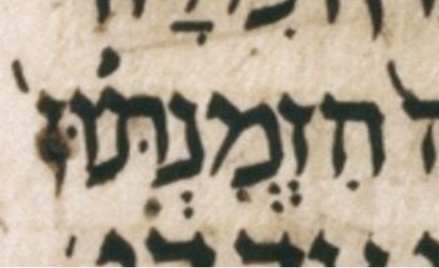

| bcv (tanach.us) | da2:9 |
| MPK | הִזְ◌ְמִנְתּוּן֙ |
| qere | הִזְדְּמִנְתּוּן֙ |
| at issue | דּ |
| at issue English | added a dagesh to dalet |
| folio col line | 438B 1 18 |
The MPK has no letter to carry a dagesh for the qere’s ד.
Unlike the dagesh, the sheva does not need a letter to carry it; it is allowed to be an orphan. It appears between the sheva and the ḥiriq (of the ז and מ respectively). Unlike the manuscript, our MPK shows that orphan sheva on a dotted circle.